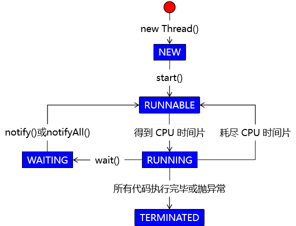
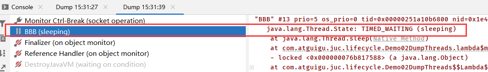

什么是JUC
JUC就是java.util .concurrent工具包的简称。这是一个处理线程的工具包，JDK 1.5开始出现的。严格来说
JUC 并不是一个有官方文档承认的技术名称，而只是我们为了方便交流给这个课程起的一个非正式的名字。
程序、进程与线程
程序与进程
- 程序是静态概念，一个软件系统开发完成部署到运行环境下就是可以使用的程序了。
- 进程的动态概念，一个程序运行起来就是一个进程，所以进程就是跑起来的程序。
进程与线程
如果程序在运行过程中需要同时执行多个不同任务，那么就可以创建多个线程，在各个线程中并发（或并行）执行各个任务。线程是操作系统能够进行运算调度的最小单位。它被包含在进程之中，是进程中的实际运作单位，从这个意义上来说：进程是线程的容器。
串行、并行与并发
任务是将左边的一堆柴全部搬到右边烧掉，每个任务包括三个过程：取柴，运柴，放柴烧火。老鼠代表CPU。
串行
在一个线程内部所执行的所有操作都是串行的。
所谓串行就是把任务穿成一串儿，按顺序执行。同时如果多个任务是串行执行的，那么我们也可以说这些任务的执行方式是同步的。
在一个线程中调用任何一个方法都必须等这个方法中的代码都执行完才能执行方法后面的代码。
拿烧柴的例子来说就是：串行意味着必须先装完一车柴才能运送这车柴，只有运送到了，才能卸下这车柴，并且只有完成了这整个三个步骤，才能进行下一个步骤。
并行
并行（parallel）意味着可以同时取得多个任务，并同时去执行所取得的这些任务。并行模式相当于将长长的一条队列，划分成了多条短队列，所以并行缩短了任务队列的长度。并行的效率从代码层次上强依赖于多进程/多线程代码，从硬件角度上则依赖于多核 CPU。
如下图，是多进程/多线程(2个工作者)的并行：
并发
并行和并发的区别在于：
- 并行（parallel）：多个 CPU（或多个 CPU 核心）执行多个任务。（多项工作一起执行，之后再汇总）
- 并发（concurrent）：一个 CPU（或 CPU 的一个核心）执行多个任务，需要分 CPU 时间片，本质上是各个任务轮流执行。（同一时刻多个线程在访问同一个资源，多个线程对一个点）
要解决大并发问题，通常是将大任务分解成多个小任务，由于操作系统对进程的调度是随机的，所以切分成多个小任务后，可能会从任一小任务处执行。这可能会出现一些现象：
- 可能出现一个小任务执行了多次，还没开始下个任务的情况。这时一般会采用队列或类似的数据结构来存放各个小任务的成果
- 可能出现还没准备好第一步就执行第二步的可能。这时，一般采用多路复用或异步的方式，比如只有准备好产生了事件通知才执行某个任务。
- 可以多进程/多线程的方式并行执行这些小任务。也可以单进程/单线程执行这些小任务，这时很可能要配合多路复用才能达到较高的效率
上图中将一个任务中的三个步骤取柴、运柴、卸柴划分成了独立的小任务，有取柴的老鼠，有运柴的老鼠，有卸柴烧火的老鼠。
如果上图中所有的老鼠（代表CPU）都是同一只，那么是串行并发的，如果是不同的多只老鼠，那么是并行并发的。
线程状态
线程状态枚举类
public enum State {
/**
* Thread state for a thread which has not yet started.
*/
NEW,
/**
* Thread state for a runnable thread. A thread in the runnable
* state is executing in the Java virtual machine but it may
* be waiting for other resources from the operating system
* such as processor.
*/
RUNNABLE,
/**
* Thread state for a thread blocked waiting for a monitor lock.
* A thread in the blocked state is waiting for a monitor lock
* to enter a synchronized block/method or
* reenter a synchronized block/method after calling
* {@link Object#wait() Object.wait}.
*/
BLOCKED,
/**
* Thread state for a waiting thread.
* A thread is in the waiting state due to calling one of the
* following methods:
* <ul>
* <li>{@link Object#wait() Object.wait} with no timeout</li>
* <li>{@link #join() Thread.join} with no timeout</li>
* <li>{@link LockSupport#park() LockSupport.park}</li>
* </ul>
*
* <p>A thread in the waiting state is waiting for another thread to
* perform a particular action.
*
* For example, a thread that has called <tt>Object.wait()</tt>
* on an object is waiting for another thread to call
* <tt>Object.notify()</tt>or <tt>Object.notifyAll()</tt>on
* that object. A thread that has called <tt>Thread.join()</tt>
* is waiting for a specified thread to terminate.
*/
WAITING,
/**
* Thread state for a waiting thread with a specified waiting time.
* A thread is in the timed waiting state due to calling one of
* the following methods with a specified positive waiting time:
* <ul>
* <li>{@link #sleep Thread.sleep}</li>
* <li>{@link Object#wait(long) Object.wait} with timeout</li>
* <li>{@link #join(long) Thread.join} with timeout</li>
* <li>{@link LockSupport#parkNanos LockSupport.parkNanos}</li>
* <li>{@link LockSupport#parkUntil LockSupport.parkUntil}</li>
* </ul>
*/
TIMED_WAITING,
/**
* Thread state for a terminated thread.
* The thread has completed execution.
*/
TERMINATED;
}
说明
| 英文名称 | 中文名称 | 含义 |
|---|---|---|
NEW |
新建 | 线程对象刚创建 |
RUNNABLE |
就绪 | 等待 CPU 时间片 |
| RUNNING | 运行 | 得到了 CPU 时间片，正在执行 |
BLOCKED |
阻塞 | 等待同步锁 |
WAITING |
等待 | 等待被唤醒 |
TIMED_WAITING |
限时等待 | 在进入等待状态时设定了等待时间 时间一到自动回到就绪状态 |
TERMINATED |
终止 | 线程因为代码执行完成或抛异常而停止执行 |
线程的生命周期
新建 NEW
就绪 RUNNABLE
运行 RUNNING

回到就绪状态 RUNNABLE
本次得到的 CPU 时间片用完，重新回到就绪状态，等待下一个 CPU 时间片。
结束 TERMINATED
等待 WAITING
public class Demo01DumpThreads {
public static void main(String[] args) {
// 创建一个对象用来操作线程状态
Object commonObject = new Object();
// 创建一个线程对象
new Thread(() -> {
synchronized (commonObject) {
try {
// 进入等待状态
commonObject.wait();
} catch (InterruptedException e) {
e.printStackTrace();
}
}
}).start(); // 开启一个匿名线程
}
}
Thread Dump：Thread Dump是非常有用的诊断Java应用问题的工具。每一个Java虚拟机都有及时生成所有线程在某一点状态的thread-dump的能力，虽然各个 Java虚拟机打印的thread dump略有不同，但是大多都提供了当前活动线程的快照，及JVM中所有Java线程的堆栈跟踪信息，堆栈信息一般包含完整的类名及所执行的方法，如果可能的话还有源代码的行数。
查看线程状态：点击照相机就可以查看线程状态
唤醒
超时等待与唤醒 TIMED_WAITING
阻塞 BLOCKED
演示代码
public class Demo02DumpThreads {
public static void main(String[] args) {
// 创建一个普通对象作为同步锁
Object commonObject = new Object();
// 创建两个线程，其中一个线程睡眠时另一个就是阻塞状态
new Thread(()->{
try {
synchronized (commonObject) {
Thread.sleep(10000);
}
} catch (InterruptedException e) {
e.printStackTrace();
}
}, "AAA").start();
new Thread(()->{
try {
synchronized (commonObject) {
Thread.sleep(10000);
}
} catch (InterruptedException e) {
e.printStackTrace();
}
}, "BBB").start();
}
}
查看线程状态
AAA 线程获取同步锁，执行同步代码块，进入 TIMED_WAITING 状态。
AAA 线程未释放同步锁时，BBB 线程处于 BLOCKED 状态
AAA 线程执行完成，释放同步锁，BBB 线程获得同步锁，执行代码块，进入 TIMED_WAITING 状态
得到锁
wait/sleep的区别
sleep是Thread的静态方法，wait是Object的方法，任何对象实例都能调用
**sleep不会释放锁，它也不需要占用锁。wait会释放锁，但调用它的前提是当前线程占有锁(即代码要在synchronized中)**。
它们都可以被interrupted方法中断。
验证：sleep() 进入等待状态不释放锁
public class Demo03WaitAndSleep {
// 要验证的结论：sleep() 拿着锁去睡; wait() 放开锁去睡
public static void main(String[] args) {
// 创建一个对象用于 synchronized 同步锁
Object commonObj = new Object();
// 创建线程 AAA
new Thread(() -> {
System.out.println(Thread.currentThread().getName() + " begin");
// 设定同步代码块
synchronized (commonObj) {
try {
Thread.sleep(10000);
System.out.println(Thread.currentThread().getName() + " end");
} catch (InterruptedException e) {
e.printStackTrace();
}
}
}, "AAA").start();
// 创建线程 BBB
new Thread(()->{
System.out.println(Thread.currentThread().getName() + " begin");
synchronized (commonObj) {
System.out.println(Thread.currentThread().getName() + " working");
}
}, "BBB").start();
}
}
/*
打印结果：
AAA begin
BBB begin
AAA end
BBB working
1-在创建线程时打印AAA begin和BBB begin；
2-sleep() 进入等待状态不释放锁，于是BBB线程也要等着
3-AAA线程结束等待时间，打印AAA end
4-AAA执行完释放锁，BBB线程打印BBB working
*/
验证：wait()进入等待状态释放锁
public class Demo04WaitAndSleep {
public static void main(String[] args) {
// 创建一个对象用于 synchronized 同步锁
Object commonObj = new Object();
// 创建线程 AAA
new Thread(() -> {
System.out.println(Thread.currentThread().getName() + " begin");
// 设定同步代码块
synchronized (commonObj) {
try {
commonObj.wait(10000);
System.out.println(Thread.currentThread().getName() + " end");
} catch (InterruptedException e) {
e.printStackTrace();
}
}
}, "AAA").start();
// 创建线程 BBB
new Thread(()->{
System.out.println(Thread.currentThread().getName() + " begin");
synchronized (commonObj) {
System.out.println(Thread.currentThread().getName() + " working");
}
}, "BBB").start();
}
}
/*
打印结果：
AAA begin
BBB begin
BBB working
AAA end
1-创建两个线程的时候，分别打印AAA begin和BBB begin
2-wait（）进入等待状态时，会释放锁
3-BBB线程拿到锁打印BBB working
4-AAA线程结束等待时间，打印AAA end
*/
总结
wait() |
sleep() |
|
|---|---|---|
| 声明位置 | Object 类 | Thread 类 |
| 作用对象 | 作用于调用 wait() 方法的对象 | 作用于当前线程 |
| 性质 | 非静态方法 | 静态方法 |
| 释放锁资源 | 放开锁进入等待 | 不释放锁进入等待 |
| 同步要求 | 必须在同步上下文中使用 | 不要求在同步上下文中 |
管程（锁）
管程(monitor)是保证了同一时刻只有一个进程在管程内活动,即管程内定义的操作在同一时刻只被一个进程调用(由编译器实现)。但是这样并不能保证进程以设计的顺序执行
JVM中同步是基于进入和退出管程(monitor)对象实现的，每个对象都会有一个管程(monitor)对象，管程(monitor)会随着java对象一同创建和销毁
执行线程首先要持有管程对象，然后才能执行方法，当方法完成之后会释放管程，方法在执行时候会持有管程，其他线程无法再获取同一个管程
管程（monitor）是一种同步机制，保证同一个时间，只有一个线程访问被保护数据或者代码
用户线程和守护线程
用户线程：我们一般自定义的现场都是用户线程
守护线程：在后台默默执行的线程就是守护线程，比如垃圾回收
当主线程结束后，用户线程还有执行
public class Main {
public static void main(String[] args) {
Thread aa = new Thread(() -> {
System.out.println(Thread.currentThread().getName() + "::" + Thread.currentThread().isDaemon());
while (true) {
}
}, "aa");
aa.start();
System.out.println(Thread.currentThread().getName()+" over");
}
}
如下图：主线程已经结束了，但是用户线程还在运行，JVM还在存活
Daemon=false表示：用户线程
当JVM中都是守护线程，当前JVM将退出，守护线程也结束
public class Main {
public static void main(String[] args) {
Thread aa = new Thread(() -> {
System.out.println(Thread.currentThread().getName() + "::" + Thread.currentThread().isDaemon());
while (true) {
}
}, "aa");
//设置守护线程
aa.setDaemon(true);
aa.start();
System.out.println(Thread.currentThread().getName()+" over");
}
}
下图表示：主线程结束了，只剩下守护线程，那么JVM就会退出，守护线程也结束
转载请注明来源，欢迎对文章中的引用来源进行考证，欢迎指出任何有错误或不够清晰的表达。可以在下面评论区评论，也可以邮件至 1909773034@qq.com